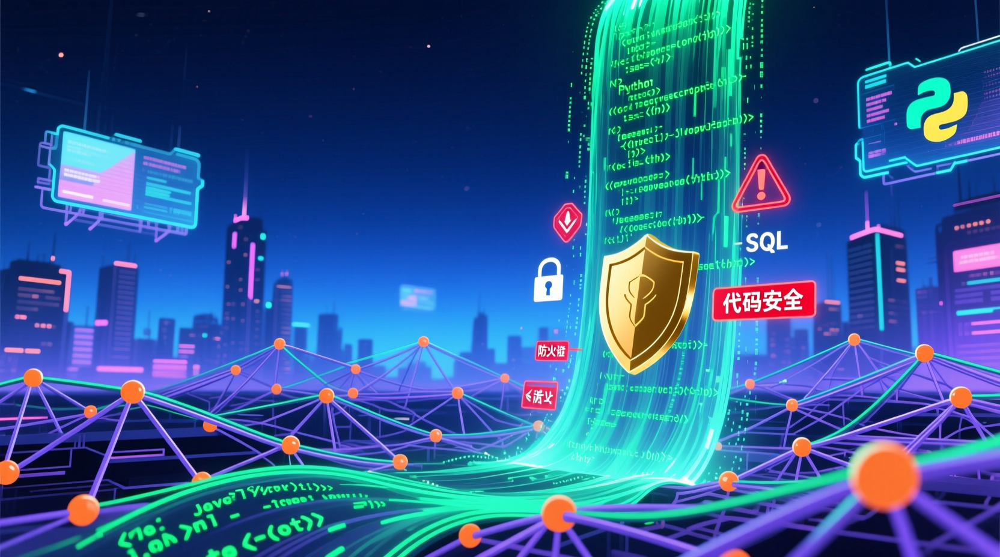

Anthropic「王牌」產品 51.2 萬行源代碼因 npm 配置疏忽遭完整洩露
安全研究員意外發現，引發全球 AI 業界震動

從洩露到發現，一場現實版的「代碼大偷渡」
Anthropic 在 npm 倉庫發布 @anthropic-ai/claude-code v2.1.88 版本，卻意外將包含完整源代碼的 59.8MB 偵錯用 cli.js.map 文件打包其中。
Web3 安全公司 FuzzLand 實習研究員 Chaofan Shou（@Fried_rice）率先發現並披露這一漏洞，文件中的 sourcesContent 字段直接包含完整源碼。
安全大佬 Chaofan Shou 的帖子瞬間在整個硅谷引爆，引來 2200 多萬人圍觀。科技圈上演了一場現實版的「代碼大偷渡」。
GitHub 上出現大量 Claude Code「換殼」克隆項目，Anthropic 緊急封殺但為時已晚。開發者紛紛下載研究這 51.2 萬行珍貴代碼。
各大科技媒體爭相報道，分析此次洩露對 AI 行業的影響。國產 AI 編程工具被認為迎來發展機遇。
這次洩露為何如此轟動？五大關鍵因素解析
洩露的不是片段代碼，而是包含完整核心邏輯的 51.2 萬行源代碼，甚至包括開發人員的手寫註釋，可直接還原 Claude Code 的全部功能。
幾乎所有開發者都熟悉的低級錯誤：npm 註冊表中的 map 文件配置疏忽，導致 sourcesContent 字段包含完整源碼，本應只包含符號映射。
洩露代碼揭示了 Claude Code 的代理循環（agent loop）、50 多個工具集成、多代理協作架構，以及尚未發布的功能特性。
Anthropic 試圖緊急下架並封殺相關項目，但代碼已在 GitHub 上被瘋狂克隆，「換殼」版本層出不窮，封殺行動宣告失敗。
分析認為，此次洩露讓國內開發者得以學習頂尖 AI 編程工具的架構設計，國產 AI 編程工具可能迎來重要發展機遇。
事件在社交媒體上引發巨大關注，超過 2200 萬人圍觀討論，成為 2026 年科技圈最轟動的安全事件之一。
這次洩露對 AI 行業意味著什麼？
事件曝光後，相關方的反應與措施
Anthropic 緊急下架受影響的 npm 包版本，嘗試通過 DMCA 通知移除 GitHub 上的克隆項目。公司發表聲明承認「打包配置錯誤」，表示已加強內部審查流程，但未透露具體損失評估。
Web3 安全公司 FuzzLand 實習研究員 Chaofan Shou 在社交媒體詳細披露了漏洞細節，包括如何從 map 文件中提取完整源碼。他的帖子成為事件發酵的起點，獲得業界廣泛關注。
GitHub 上出現大量「Claude Code Unpacked」、「Claude Code 解析」等項目，開發者熱烈討論代碼架構。部分開發者認為這是「學習頂級 AI 工具的絕佳機會」，也有人呼籲尊重知識產權。
36 氪、鈦媒體、搜狐科技等主流科技媒體爭相報道，分析此次洩露對 AI 行業的深遠影響。多數評論認為這是「AI 發展史上最大的源代碼洩露事件之一」。